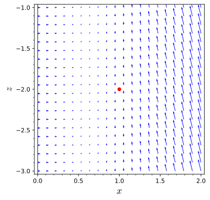

What is meant by rotation of a vector field in a plane?
How can a two-dimensional measurement of rotation be generalized to work in three dimensions?
How can the rotational strength of a vector field be measured?
In Section13.6, we examined how the strength of a vector field in two (or more) dimensions changed in different regions. In particular, we developed the divergence of a vector field as a local (or density) measurement for how the strength of the vector field changes. The key ideas when interpreting divergence are:
A positive divergence means that the vector field is growing in strength.
A negative divergence means that the vector field is decreasing in strength.
A zero divergence means that the vector field is not changing in strength.
In many physical settings, it is also useful to measure the rotational strength of a vector field at a local scale. For instance, the vector field on the left of Figure13.7.1 shows a vector field which flows in a counterclockwise fashion around the origin. The vector field on the right of Figure13.7.1 shows a vector field which does not have a rotational aspect to its flow.
Figure13.7.1.Examples of vector fields with global rotation properties (left) and without rotation in either the global or local sense (right)
These global ideas of rotation are nice, but are not always visually apparent or may only appear in some regions. For instance, the vector field on the left of Figure13.7.2 seems to have rotation around at least a couple of different points. In each quadrant, the vector field on the right of Figure13.7.2 has different rotational patterns.
A vector field having longer vectors where \(x \lt 0\text{.}\) For \(x>0\text{,}\) vectors appear to get longer as distance from the \(x\)-axis increases.
A vector field with vectors shortest along the line \(y=x\) and longer as distance from that line increases. Vectors in the fourth quadrant point primarily in the positive \(x\)-direction, although none are truly vertical. Vectors in the second quadrant point primarily in the negative \(x\)-direction, although none are truly vertical. Vectors in the first and third quadrants exhibit a form of counterclockwise rotation.
Figure13.7.2.Examples of vector fields with varying rotation properties
Preview Activity13.7.1.
We would like to understand and measure rotation of a vector field near a particular point. In order to investigate this concept, we will look at some two-dimensional vector fields and think about whether the vector field shown will rotate a small pinwheel or spinner placed at a particular location. The sort of spinner we imagine is illustrated in Figure13.7.3. It consists of a central axis with a four-bladed paddle placed at one end of the axis. We imagine that the spinner is anchored at a point and the vector field, perhaps thought of as a fluid flow or wind velocity vector field, pushes against the blades of the spinners paddle. In this activity, we will be trying to assess how the the spinner will rotate around the black axel (as an axis of rotation).
Figure13.7.3.A paddle-bladed spinner
To begin our investigation of the rotation of a spinner in a vector field, we will look at the vector field \(\vF\) in Figure13.7.4. As you think about these questions, draw an X at each of the points about which you are asked and consider the vector field as being the pattern of a wind blowing across the plane.
Figure13.7.4.The vector field \(\vF\)
(a)
Draw an X at the origin to act as your spinner. Draw a vector on the top right blade of your spinner that represents how the wind will push on that blade. Next, draw a vector on each of the other blades of your spinner that represents how the wind will push on that blade.
(b)
Use your vector representations from the previous part to describe if a small spinner placed at the origin would spin clockwise, counterclockwise, or not spin at all.
(c)
Now we would like to look at the rotational strength of \(\vF\) at the point \((1,1)\text{.}\) As before, draw a spinner at this point and draw vectors on each of the blades to represent how the wind will push on that blade. It is important at this stage to draw the relative lengths of the vectors on each blade to scale so you can see which blades have a larger force due to the wind.
(d)
Use your vector representations from the previous part to describe if a small spinner placed at at \((1,1)\) would spin clockwise, counterclockwise, or not spin at all. You should pay attention to which blades will have a stronger force (in comparison to the blade on the other side).
(e)
Would a small spinner placed at \((-2,1)\) spin clockwise, counterclockwise, or not spin at all? Draw a representation of a spinner if necessary to demonstrate your ideas.
(f)
Are there any points on the \(xy\)-plane where the spinner would not turn counterclockwise?
Subsection13.7.1Measuring the Circulation Density of Vector Field in \(\R^2\)
In this subsection, we will develop the measurement of the circulation density for a two-dimensional vector field. We will use this measurement to generalize to a notion of rotational strength in higher dimensional cases in the next subsection.
We will start by measuring the circulation of a vector field on a path around the point \((a,b)\) and use this measurement to define circulation density. Specifically, we will measure the circulation of a vector field as we move around a square centered at \((a,b)\text{.}\) Using this measurement, we will calculate the circulation density by dividing our measurement by the area enclosed. This will allow us to compare our measurement across regions of different sizes. By taking the limit of this circulation density as the squares side length goes to zero, we will have the circulation density at the point \((a,b)\text{.}\) Just as in our discussion of Subsection13.6.2, we will look at a two dimensional setting first, then examine how our argument can be generalized to higher dimensions.
Lets start by measuring the circulation around a square with side length \(2h\) centered at a point \((a,b)\text{.}\) Namely, we will look at the line integral of our vector field as we move along the square curve shown in Figure13.7.5.
A square with sides parallel to the coordinate axes. The center of the square is at the point \((a,b)\text{.}\) The upper right corner of the square is labeled \((a+h,b+h)\text{.}\) Each edge of the square is oriented so that the overall orientation around the square is counterclockwise.
Figure13.7.5.A square centered at the point \((a,b)\) with side lengths \(2h\) traveled counterclockwise
We can parametrize the top edge of the square using the parametrization
In order to measure the circulation around the square, we want to know how much of the vector field \(\vF = \langle F_1,F_2\rangle\) is parallel to the direction of travel. Thus, along each of the sides of the box, we only need to look at one of the components of the vector field. The only contribution to the circulation on the top and bottom comes from the horizontal component \(F_1\text{.}\) Similarly, the vertical component, \(F_2\text{,}\) is all that contributes to the circulation on the right and left sides. This means that we can simplify our line integrals considerably once we apply Theorem13.3.6. For instance, the circulation on the top can be written as
Similarly, we can simplify the appropriate line integrals on the other sides (ordered below as top, left, bottom, right) to get the total circulation around the square to be
Note that on the top and the left sides, we must switch the sign because the direction of travel on these sides is in the negative coordinate direction. It is important to note that by convention, we talk about positive rotation being counterclockwise and negative rotation being clockwise when looking at these planar graphs. This will be discussed more fully in Subsection13.7.2.
As with our development of divergence, we apply the Mean Value Theorem for Integrals to the four integrals above to simplify future calculations. Specifically, the Mean Value Theorem for Integrals applied to the first integral tells us that there is a value, \(t_{\text{top}}^*\text{,}\) in the interval \((a-h,a+h)\) such that
Here we have \(t_{\text{top}}^*,t_{\text{bottom}}^* \in (a-h,a+h)\) and \(t_{\text{left}}^*,t_{\text{right}}^* \in (b-h,b+h)\text{.}\) We can regroup these terms to get the following expression for the total circulation around our square:
A larger square is likely to have a larger total circulation since there is more distance to accumulate how much the vector field is moving in the same direction as our path. This is why the side length \(2h\) of the square appears as a factor in the formula for our total circulation. In order to compare our rotational or circulation ideas over different sizes of squares, we will now look at the circulation density (strength of rotation per unit area), which can be computed directly from our total circulation measurement. We can take the limit of the circulation density as we shrink the square to the central point \((a,b)\) and get a measurement rotational strength of our vector field at a point.
We will compute our circulation density as
\begin{equation*}
\text{Circulation Density}=\lim_{h\rightarrow 0} \frac{\text{Total Circulation}}{\text{Area of Square}}\text{.}
\end{equation*}
Since the area of the square is \((2h)^2 = 4h^2\text{,}\) this gives us that the circulation density is
Recall the central difference method of estimating derivatives from Section 1.5.21
activecalculus.org/single/sec-1-5-units.html#VjW
and notice that as \(h\to 0\text{,}\)\(t_{\text{top}}^*,t_{\text{bottom}}^*\) must go to \(a\) and \(t_{\text{left}}^*,t_{\text{right}}^*\) must go to \(b\text{.}\) Therefore, our circulation density measurement at a point is
\begin{equation*}
\text{Circulation Density at the point }(a,b)= \frac{\partial F_2}{\partial x} (a,b)-\frac{\partial F_1}{\partial y} (a,b)
\end{equation*}
You may have noticed that this argument had a similar flow to the development of divergence in Section13.6. However, the result here is different because the property of the vector field we were trying to measure was different. Because divergence was developed to measure the change in the strength of the vector field (without regard to the direction), divergence is computed using the partial derivatives of the horizontal component of the vector field with respect to the horizontal variable and the vertical component of the vector field with respect to the vertical variable. The circulation density we just developed measures how the direction of the vector field is changing, and thus uses partial derivatives of the components with respect to the transverse variable. In other words, the rotational aspects of the vector field depend on how the horizontal component of the vector field changes when we move vertically (and vice versa).
We could have used a shape other than a square in the development of the circulation density, but a square allows for calculations that are easier to understand as the area of the shape decreases.
Activity13.7.2.Matching Visual Measurements to Algebraic Calculations.
Remember that the circulation density of a vector field \(\vF=\langle F_1,F_2\rangle\) at a point \((a,b)\) is calculated as
\begin{equation*}
\text{Circulation Density at the point }(a,b)= \frac{\partial F_2}{\partial x} (a,b)-\frac{\partial F_1}{\partial y} (a,b)\text{.}
\end{equation*}
The circulation density will be positive when a small spinner placed at \((a,b)\) will spin counterclockwise, negative when the spinner will move clockwise, and zero when the spinner does not rotate.
For each of the vector fields given below, answer the following questions:
What is the formula for the circulation density of the vector field?
For what points will you have a positive circulation density?
For what points will you have a negative circulation density?
For what points will you have a zero circulation density?
(a)
\(\langle -y,x\rangle\)
(b)
\(\langle x,y\rangle\)
(c)
\(\langle 1-x,xy\rangle\)
Subsection13.7.2Measuring Rotation in Three Dimensions
The previous subsection showed how we can measure the circulation density, or strength of rotation, at a point for a two-dimensional vector field. In this subsection, we will look at how this two-dimensional measurement can be used to define circulation density for three dimensional vector fields.
Figure13.7.6.Rotation as a vector on the \(xy\)-plane
We first need to consider how we want to represent and measure rotation in three dimensions. When we developed the circulation density on the \(xy\)-plane, we measured the rotational strength at a point \((a,b)\) with an axis of rotation coming out of the \(xy\)-plane. This corresponds to the axis of rotation being given by the blue vector in Figure13.7.6. Remember that positive rotation corresponds to counterclockwise rotation in the \(xy\)-plane. We can generalize this idea to think of rotation in three dimensions as being represented by a vector where
the direction of the vector represents the axis of rotation and
the magnitude of the vector represents the strength of the rotation.
By convention, we consider positive rotation to correspond to counterclockwise rotation when the vector field is viewed looking from the terminal point of the vector to its initial point. In Figure13.7.7, you can see that each vector corresponds to the rotation displayed and is consistent with the conventions described above.
Figure13.7.7.Rotation as a vector on each coordinate plane
If you look carefully at Figure13.7.7, you can see that the vector shown in blue will be parallel to \(\vk\) and will represent rotations on planes of the form \(z=c\text{.}\) Similarly, the vector shown in yellow will be parallel to \(\vi\) and will represent rotations on planes of the form \(x=a\text{.}\) When looking down the blue and yellow vectors (from the terminal to the initial point), you can see the positive coordinate axes as pointing to the right and up2
When placing the \(x\)-axis horizontally for the blue vector and placing the \(y\)-axis horizontally for the yellow vector
(as we would expect on a two-dimensional plot). In contrast, when you look down the magenta vector (from the terminal to the initial point), the positive coordinate axes (the \(x\) and \(z\) axes) point to the left and up.3
When placing the \(x\)-axis horizontally.
In fact, when we look down the magenta vector the \(xz\)-plane is flipped. A positive rotation on a plane of the form \(y=b\) will correspond to a rotation vector that is in the direction of \(-\vj\text{.}\) This is a consequence of the right-handed coordinate system and our right-handed idea of rotation, as reflected in the relationships amongst the vectors \(\vi,\vj\,\vk\) recalled below:
By using a vector to represent the rotation of some element, we have enabled all of the tools that vectors allow, especially the ideas of projection and linear combinations. Remember that the projection of a vector \(\vv\) onto a vector \(\vu\) will give the vector component of \(\vv\) that is parallel to \(\vu\text{.}\) In other words, the projection of \(\vv\) onto \(\vu\) is how much of \(\vv\) is parallel to \(\vu\text{.}\) The projection formula will allow us to take a vector representation of rotation and determine how much rotation happens around a given axis of rotation.
Recall that we have used a set of coordinate vectors (namely \(\vi\text{,}\)\(\vj\text{,}\) and \(\vk\)) to write other vectors as a linear combination of our base vectors. In other words, a vector \(\langle a,b,c\rangle\) in \(\R^3\) can be written in the form \(a\vi+b\vj+c\vk\text{.}\)
Figure13.7.8.The black vector, \(\langle a,b,c \rangle\text{,}\) is decomposed into parts parallel to \(\vi\text{,}\)\(\vj\text{,}\) and \(\vk\text{.}\)
The linear combination of vectors will allow us to build the total rotation vector by measuring the rotational strength in the direction of three coordinate direction vectors. Just as in Figure13.7.8, we will build our total rotation vector as a sum of \(\vi\text{,}\)\(\vj\text{,}\) and \(\vk\text{,}\) but we will think of the initial point of the black vector as being at our point of interest \((u,v,w)\)A rotation vector in the direction of \(\vk\) at a point \((u,v,w)\) will measure the circulation density at our point restricted to the trace plane \(z=w\text{.}\) Similarly the rotation vectors in the directions \(\vi\) and \(\vj\) will measure the circulation density on the trace planes \(x=u\) and \(y=v\text{,}\) respectively.
Subsection13.7.3Circulation Density in Three Dimensions
The previous subsection discussed how we can view the amount of rotation of a three-dimensional vector field in a plane parallel to the \(xy\)-, \(xz\)-, or \(yz\)-plane and recalled that vectors in \(\R^3\) can be written as a linear combination of the vectors \(\vi\text{,}\)\(\vj\text{,}\) and \(\vk\text{.}\) We use our definition of curl for a two-dimensional vector field to measure the amount of rotation in the appropriate planes, which leads to the following definition.
Definition13.7.9.
Let \(\vF=\langle F_1,F_2,F_3\rangle\) be a three-dimensional vector field. The curl of \(\vF\) is given by
The curl is exactly the rotational description described at the end of Subsection13.7.2. When evaluated at a point \((u,v,w)\text{,}\) the first component of the curl will measure the circulation density of the vector field restricted to the plane \(x=u\text{.}\) Similarly, the second and third components of the curl will measure the circulation density of the vector field restricted to the planes \(y=v\) and \(z=w\text{,}\) respectively.
Example13.7.10.
In this example, we will look at \(\vF=\langle 0,x,0\rangle \text{.}\) Applying Definition13.7.9,
Thus, \(\curl(\vF)=\langle 0,0,1\rangle\text{.}\) This means that \(\vF\) will have a rotational aspect only with an axis parallel to the \(z\)-axis. This should not be suprising since the plot of \(\vF\) will be the same as Figure13.7.4 copied on each plane \(z=c\text{.}\) As you saw in Preview Activity13.7.1, this vector field will have constant rotational strength at every point with axis of rotation in the \(\vk\) direction.
We next consider an example where the trace of the vector field in planes parallel to coordinate planes is not as easy to visualize as in the previous example.
Example13.7.11.
In this example, we will look at \(\vG=\langle x,y,z\rangle \text{.}\) If we apply Definition13.7.9, we obtain
Therefore, we have \(\curl(\vG)=\langle 0,0,0\rangle\text{.}\) Thus, \(\vG\) will have no rotational strength anywhere. In Figure13.7.12 we have a plot of \(\vG\text{,}\) which illustrates that dropping a spinner at any point in space will not have the spinner rotate. No matter what orientation the spinner will have, there will be equal force on each side of the spinner, and thus the spinner will not rotate.
Figure13.7.12.The black vector, \(\langle a,b,c \rangle\text{,}\) is decomposed into parts parallel to \(\vi\text{,}\)\(\vj\text{,}\) and \(\vk\text{.}\)
Example13.7.13.
In this example, we will look at \(\vH=\langle x-y,y+2z,x^2\rangle \text{.}\) By Definition13.7.9,
Therefore, \(\curl(\vH)=\langle 0,2x,-1\rangle\text{.}\) This tells us that the vector field \(\vH\) will have a non-zero curl for every point. However, it will be quite difficult to see the curl at a particular point. The next activity will take you through the process of trying to visualize and understand the output of curl in three dimensions.
Activity13.7.3.Estimating Curl in Three Dimensions.
(a)
Consider the vector field \(\vF\) plotted in Figure13.7.14. You can adjust the size of the region around \((1,1,-2)\) over which the vector field is plotted using the Zoom slider. The Density slider allows you to adjust the number of vectors plotted. Try to identify any rotation in the three dimensional vector field plot at the point \((1,1,-2)\text{.}\) Write a sentence describing how a spinner placed at \((1,1,-2)\) would rotate, including along which axis it would rotate. Try to state your answer as a vector representing the rotational strength of the vector field at \((1,1,-2)\text{.}\)
Figure13.7.14.A vector field plotted in a region around the point \((1,1,-2)\)
(b)
You likely found it difficult to decide how you thought a spinner might rotate in this new, three-dimensional setting. Lets look at the vector field in the plane \(z=-2\text{,}\) as displayed in Figure13.7.15. Do you think a spinner placed on the red point would rotate clockwise, counterclockwise, or not rotate? If the spinner will rotate, you should think about what the axis of rotation would be and whether the rotation should be positive or negative. Summarize your result as a vector representing the rotational strength of \(\vF\) in the plane \(z=-2\text{.}\)
A vector field in two dimensions. The horizontal axis is labeled \(x\) and ranges from \(0\) to \(2\text{.}\) The vertical axis has the same range and is labeled \(y\text{.}\) There is a point marked at \((1,1)\text{.}\) Vectors point primarily down and are longer when closer to the horizontal axis. In the upper-left of the plot, the vectors point more down and left. In the lower-right of the plot, vectors point more down and right.
Figure13.7.15.The trace of \(\vF\) in the plane \(z=-2\)
(c)
Next we will look at the vector field in the plane \(y=1\text{,}\) as displayed in Figure13.7.16. Do you think a spinner placed on the red point would rotate clockwise, counterclockwise, or not rotate? If the spinner will rotate, you should think about what the axis of rotation would be and whether the rotation should be positive or negative. Summarize your result as a vector representing the rotational strength of your vector field in the plane \(y=1\text{.}\) Do you think the rotation in this figure is stronger or weaker than in Figure13.7.15?

A vector field in two dimensions. The horizontal axis is labeled \(x\) and ranges from \(0\) to \(2\text{.}\) The vertical axis ranges from \(-3\) to \(-1\) and is labeled \(z\text{.}\) There is a point marked at \((1,-2)\text{.}\) Vectors in the right half of the figure are longer and point primarily up, although slightly to the left. Vectors in the left half of the figure are very short and point primarily right until around \(x=0.75\text{,}\) where they start to point up but are very short.
Figure13.7.16.The trace of \(\vF\) in the plane \(y=1\)
(d)
Finally, consider the trace of \(\vF\) in the plane \(x=1\text{,}\) as displayed in Figure13.7.17. Do you think a spinner placed on the red point would rotate clockwise, counterclockwise, or not rotate? If the spinner will rotate, you should think about what the axis of rotation would be and whether the rotation should be positive or negative. Summarize your result as a vector representing the rotational strength of your vector field in the plane \(x=1\text{.}\) How do you think the rotation in this figure compares (i.e., stronger or weaker) to that in Figure13.7.15 and Figure13.7.15?
A vector field in two dimensions. The horizontal axis is labeled \(y\) and ranges from \(0\) to \(2\text{.}\) The vertical axis ranges from \(-3\) to \(-1\) and is labeled \(z\text{.}\) There is a point marked at \((1,-2)\text{.}\) Vectors on the left and bottom sides of the figure are slightly longer than vectors in the top and right portions of the figure. Vectors point predominantly up, although those in the lower-corner point up and left, with vectors becoming closer to upright as one moves to the upper-right corner.
Figure13.7.17.The trace of \(\vF\) in the plane \(x=1\)
(e)
Summarize your prediction to what you think the three-dimensional rotational strength of the vector field will be at the point \((1,1,-2)\) in the form of three-dimensional vector.
Hint.
Add your results from the previous three steps.
(f)
Compute the curl of \(\vF=\langle x-y,y+2z,x^2\rangle\text{.}\) Specifically, what is \(\curl(\vF)\) at the point \((1,1,-2)\text{?}\)
(g)
Compare the result of the curl calculation in partf to your prediction from parte. You likely found it difficult to estimate the magnitude, so your answer there may be incorrect. Hopefully, you did get the signs of the components and their relative strengths (i.e., which is biggest) correct. If you did not, go back and review the previous parts and explain why the calculated components match with the rotational strength for each of the three figures.
Subsection13.7.4Interpretation and Usage of Curl
It is worth making explicit a fact that we have used implicitly throughout this section: the curl of a vector field is itself a vector field! That is, evaluating \(\curl(\vF)\) at a point gives a vector. As we saw earlier in this section, the vector output of \(\curl(\vF)\) represents the rotational strength of the vector field \(\vF\) as a linear combination of rotational strengths (or circulation densities) from two-dimensional planar descriptions. From our description of vectors as a representation of rotations, We can think of rotation in three dimensions as being represented by a vector where
the direction of the vector represents the axis of rotation and
the magnitude of the vector represents the strength of the rotation.
By convention, we consider positive rotation to correspond to counterclockwise rotation when the vector field is viewed looking from the end of the vector to the base.
With these conventions, the output vector of the curl evaluated at a point \(P\text{,}\) written as \(\curl(\vF)(P)\text{,}\) will have the following properties:
The direction of \(\curl(\vF)(P)\) will be the axis of rotation that has the strongest positive rotational strength.
The magnitude of \(\curl(\vF)(P)\) will be the circulation density of the vector field in the plane through \(P\) with normal vector \(\curl(\vF)(P)\text{.}\)
The following theorem allows us to use \(\curl(\vF)\) to measure the rotational strength of \(\vF\) around an arbitrary axis. This will be particularly useful to us in later sections.
Theorem13.7.18.
The rotational strength of a vector field \(\vF\) around an axis given by a unit vector \(\vv\) at a point \(P=(a,b,c)\) can be computed by \(\left(\curl(\vF)(a,b,c)\right)\cdot \vv\text{.}\)
Proof.
This follows from the formula for the component of \(\curl(\vF)(a,b,c)\) along \(\vv\) and the fact that \(\vv\) was selected to be a unit vector.
Activity13.7.4.
In this activity, we will work on calculating curl algebraically and interpreting it.
(a)
Consider the vector field \(\vF=\langle x,y,z\rangle\text{.}\) If we plot this vector field in any plane through the origin, we will see the vector field shown in Figure13.7.19. This two-dimensional vector field has no rotation. The projection of \(\curl(\vF)(0,0,0)\) onto any direction therefore must give the zero vector. The only vector that has a zero projection in every direction is the zero vector. Verify this geometric argument for the curl of \(\vF\) by doing the calculations necessary to show that \(\curl(\langle{x,y,z}\rangle)=\vzero\text{.}\)
Figure13.7.19.The vector field \(\langle{x,y,z}\rangle\) on every plane through the origin
(b)
Now consider the vector field \(\vF=\langle{-y,x,0}\rangle\text{,}\) which is shown in Figure13.7.20. The figure includes both an interactive three-dimensional plot of \(\vF\) as well as a two-dimensional plot of \(\vF\) in the yellow plane, which can be adjusted using the Angle of Plane slider.
Figure13.7.20.Two views of the vector field \(\langle -y,x,0\rangle\)
(i)
Based on the figure, would you estimate the components of \(\curl(\vF)\) to be positive, negative, or zero at the origin? Does your answer change if you pick a different point?
(ii)
Calculate \(\curl(\vF)\) algebraically. Does the curl of this vector field vary depending on the point at which the curl is measured?
(iii)
Explain why the rotational strength of the vector field on a titled plane through the origin will be given by \(2\cos(\theta)\text{,}\) where \(\theta\) is the angle between \(\vk\) and the normal vector of the tilted plane.
(c)
In Figure13.7.21 you can plot a vector field in a region around a point of your choosing in order to look at the rotational properties of the vector field. The check box in Figure13.7.21 will show the curl vector at the base point specified so you can make sense of your vector field and its curl.
Figure13.7.21.A plot of the vector field \(\langle{F_1,F_2,F_3}\rangle\)
Use the figure to estimate the direction of \(\curl(\langle x-z,x^2+z,x+\sin(y)\rangle)\) at the point \((1,2,-1)\text{.}\) Confirm your estimate by calculating the curl at this point algebraically. Is there any point at which the direction of greatest rotational strength of this vector field has negative \(x\)-component? If there is, find such a point. If not, explain why not.
Subsection13.7.5Summary
The circulation of a vector field on a closed path measures how strong the vector field moves in the direction of travel for the path. The circulation density of a two-dimensional vector field \(\vF=\langle{F_1,F_2}\rangle\) is given by
\begin{equation*}
\text{Circulation Density at the point }(a,b)= \frac{\partial F_2}{\partial x} (a,b)-\frac{\partial F_1}{\partial y} (a,b) \text{.}
\end{equation*}
The circulation density can be visualized in terms of how fast a very small spinner anchored to \((a,b)\) will rotate as a result of the force of \(\vF\text{.}\)
By considering the circulation density of a three-dimensional vector field \(\vF = \langle F_1,F_2,F_2\rangle\) in planes parallel to the coordinate planes, we can calculate the curl of \(\vF\) as
For a three-dimensional vector field \(\vF\text{,}\) the vector \(\curl(\vF)(a,b,c)\) points along the axis of rotation with the greatest rotational strength at the point \((a,b,c)\text{.}\) The magnitude of \(\curl(\vF)(a,b,c)\) measures the strength of the rotation in this maximal direction. The strength of rotation around an axis determined by a unit vector \(\vv\) is found by calculating \(\left(\curl(\vF)(a,b,c)\right)\cdot \vv\)
Exercises13.7.6Exercises
1.
Compute the curl of the vector field \(\vec F = 8z\,\mathit{\vec i}+8y\,\mathit{\vec j}+2x\,\mathit{\vec k}\text{.}\)
curl =
2.
Compute the curl of the vector field \(\vec{F} = \left\lt x^{2},y^{2},z^{3}\right>\text{.}\)
\(\mathrm{curl}(\vec{F}(x,y,z))\) =
What is the curl at the point \(\left(-2,-5,0\right)\text{?}\)
\(\mathrm{curl}(\vec{F}\left(-2,-5,0\right))\) =
Is this vector field irrotational or not?
Choose
irrotational
not irrotational
cannot be determined
3.
A)
Consider the vector field \(F(x,y,z) = (-5yz, 6xz, 6xy)\text{.}\)
Find the divergence and curl of \(F\text{.}\)
\(\textrm{div}(F) = \nabla \cdot F =\) .
\(\textrm{curl}(F) = \nabla \times F = (\) , ,\()\text{.}\)
B)
Consider the vector field \(F(x,y,z) = (-9x^2, 9(x+y)^2, -9(x+y+z)^2)\text{.}\)
Find the divergence and curl of \(F\text{.}\)
\(\textrm{div}(F) = \nabla \cdot F =\) .
\(\textrm{curl}(F) = \nabla \times F = (\) , ,\()\text{.}\)
4.
The figure below gives a sketch of a velocity vector field \(\vec F = (-x-y)\vec i + (-x)\vec j\) in the \(xy\)-plane. Note that vectors are given with a dot at the tail of each arrow.
(a) What is the direction of rotation of a thin twig placed at the origin along the \(x\)-axis?
clockwise
counterclockwise
it wont rotate
(b) What is the direction of rotation of a thin twig placed at the origin along the \(y\)-axis?
clockwise
counterclockwise
it wont rotate
(c) If we put a paddle wheel at the origin, instead of a twig, in what direction would you expect that to rotate?
clockwise
counterclockwise
it wont rotate
(d) Compute curl \(\vec F\text{.}\)
\(\mbox{curl}\vec F =\)
5.
For each of the vector fields below, decide if they have a nonzero or zero curl at the origin. Each vector field is shown in the \(xy\)-plane; they have no \(z\)-component and are independent of \(z\text{.}\) Note that the vector fields are shown with a dot at the tail of each vector.
(a)
(b)
(c)
Vector field (a) has
nonzero
zero
curl at the origin.
Vector field (b) has
nonzero
zero
curl at the origin.
Vector field (c) has
nonzero
zero
curl at the origin.
6.
For each of the following vector fields, find its curl and determine if it is a gradient field.
(a)\(\vec F = \left(6xy+4x^{3}\right)\,\mathit{\vec i}+\left(3x^{2}+z^{2}\right)\,\mathit{\vec j}+\left(2yz-z\right)\,\mathit{\vec k}\text{:}\)
\(\mbox{curl }\vec F =\)
\(\vec F\)
is a gradient field
is not a gradient field
(b)\(\vec G = \left(3xy+yz\right)\,\mathit{\vec i}+\left(4x^{2}+z^{2}\right)\,\mathit{\vec j}+xz\,\mathit{\vec k}\text{:}\)
\(\mbox{curl }\vec G =\)
\(\vec G\)
is a gradient field
is not a gradient field
(c)\(\vec H = 3yz\,\mathit{\vec i}+\left(z^{2}-3xz\right)\,\mathit{\vec j}+\left(3xy+2yz\right)\,\mathit{\vec k}\text{:}\)
\(\mbox{curl }\vec H =\)
\(\vec H\)
is a gradient field
is not a gradient field
7.
Let \(\mathbf{F} = (7 xy, 5 y, 6 z)\text{.}\)
The curl of \(\mathbf{F} = (\) ,, \()\text{.}\)
Is there a function \(f\) such that \(\mathbf{F} = \nabla f\text{?}\) (y/n)
8.
Three small squares, \(S_1, S_2,\) and \(S_3\text{,}\) each with side 0.1 and centered at the point \((1, 8, 6)\text{,}\) lie parallel to the \(xy\)-, \(yz\)- and \(xz\)-planes, respectively. The squares are oriented counterclockwise when viewed from the positive \(z\)-, \(x\)-, and \(y\)-axes, respectively. A vector field \(\vec G\) has circulation around \(S_1\) of \(5\text{,}\) around \(S_2\) of \(-0.01\text{,}\) and around \(S_3\) of \(-2\text{.}\) Estimate curl \(\vec G\) at the point \((1, 8, 6)\)
\(\mbox{curl }\vec G \approx\)
Subsection13.7.7Notes to Instructors and Dependencies
This section relies heavily on understanding vector fields from Section13.1. If the calculation of the curl is your primary purpose for using this section, then you can skip many of the details of Subsection13.7.1 and Subsection13.7.2. The details have been made as bite-sized as possible, but the particulars of curl typically arent easily understood without some of the calculations of circulation density. Additionally, the visualization of vector fields in 3D makes geometric interpretations harder to demonstrate.